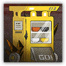
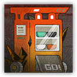

|
 |
罗德岛的食堂自助出餐终端测试机。为了免去从宿舍走到食堂的麻烦，某位分秒必争的干员灵光一现，特意给出餐终端接入了修理小助手。可惜这次测试的时机不对，本是图个方便却造成了更多的麻烦。 |
| AC 20 | 先攻 -1（9） |
| HP 76（8d10+32） | |
| 速度 20 尺 | |
| 调整 | 豁免 | 调整 | 豁免 | 调整 | 豁免 | |||||||||
|---|---|---|---|---|---|---|---|---|---|---|---|---|---|---|
| 力量 | 18 | +4 | +4 | 敏捷 | 8 | -1 | +2 | 体质 | 19 | +4 | +4 | |||
| 智力 | 7 | -2 | +1 | 感知 | 12 | +1 | +4 | 魅力 | 8 | -1 | -1 |
| 免疫 心灵，毒素；目盲，耳聋，魅惑，恐慌，力竭，麻痹，石化，中毒 |
| 感官 盲视10尺，被动察觉13 |
| 语言 无 |
| CR 5（XP 1,800；PB+3） |
|
 |
罗德岛的食堂自助出餐终端原型机。为了免去从宿舍走到食堂的麻烦，某位分秒必争的干员灵光一现，特意接入了修理小助手。可惜大部分设计都用力过猛，本是图个方便却造成了更多的麻烦。 |
| AC 21 | 先攻 -1（9） |
| HP 95（10d10+40） | |
| 速度 20 尺 | |
| 调整 | 豁免 | 调整 | 豁免 | 调整 | 豁免 | |||||||||
|---|---|---|---|---|---|---|---|---|---|---|---|---|---|---|
| 力量 | 18 | +4 | +4 | 敏捷 | 8 | -1 | +2 | 体质 | 20 | +5 | +5 | |||
| 智力 | 7 | -2 | +1 | 感知 | 12 | +1 | +4 | 魅力 | 8 | -1 | -1 |
| 免疫 心灵，毒素；目盲，耳聋，魅惑，恐慌，力竭，麻痹，石化，中毒 |
| 感官 盲视10尺，被动察觉13 |
| 语言 无 |
| CR 7（XP 2,900；PB+3） |